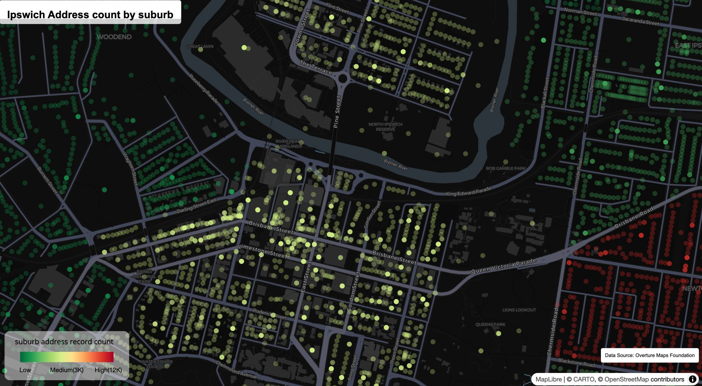
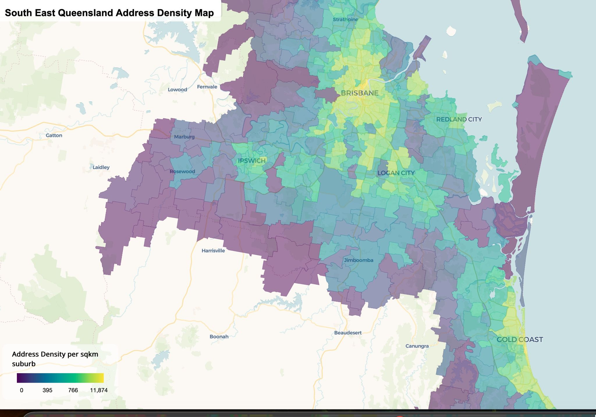
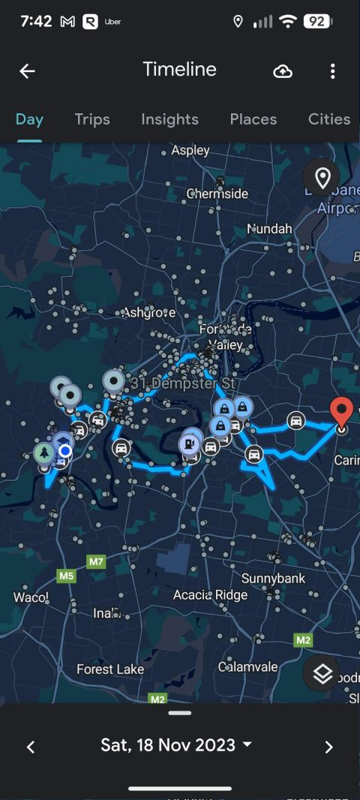
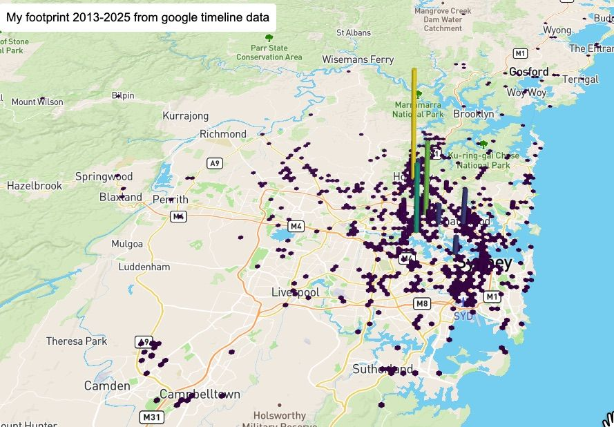

Day 1 · Points 📍
6 Nov 2025
Starting off with Ipswich addresses: about 130K, filtered down from around 3.5 million across 7 South East Queensland LGAs, using Overture Maps data. Everything was processed end to end in R with DuckDB Spatial, and mapped with {mapboxgl}.
A few takeaways from this run:
- The colour shows the address count per suburb: red is higher density, green is lower.
- Each dot is a single address. Surprisingly, the Ipswich CBD only sits at medium, while some outer suburbs glow hard 🔥
- When you zoom in, several addresses can sit on exactly the same coordinate. I probably should have mapped that instead 😅, a future improvement with a quick DuckDB calculation.
- To keep the points from cluttering the map, they only show at zoom levels 10–15. No global confetti explosion.
Same setup as Day 3: query straight from AWS S3, filter in DuckDB, then spatial joins to assign suburbs.

Day 3 · Polygons 🧩
6 Nov 2025
I set out to get hands-on with DuckDB and its spatial extension, all within R, using Overture Maps data directly from AWS S3. A few highlights:
- DuckDB can scan huge datasets without downloading everything, so processing millions of addresses finished in under 5 minutes ⚡
- Starting from worldwide address data, I filtered down to Queensland, then to 7 local government areas (LGAs).
- DuckDB spatial joins linked each address to its LGA and suburb.
- The result is an address density map per suburb, showing where people work, shop, dine and live.
It’s a first look at spatial patterns in these 7 LGAs. I’m still exploring the best way to show individual addresses, but the density map gives a clear picture of where activity is concentrated.

Day 4 · My data 🧭
10 Nov 2025
I’ve had Google Timeline quietly running in the background for years, and finally decided to dive into it. It turns out I have mobility data going all the way back to March 2013. Exploring it has been fascinating and nostalgic. The structure even reminds me of telco mobility data, from my five years working in the telco big data space.
For this map, I extracted the semantic layers and kept only the places not tagged as home or work. The data is aggregated into 500 m hexagons by time spent, showing my footprint across NSW and, increasingly, around Brisbane since moving here, with some traces overseas in Taiwan, Finland and Japan.
By the numbers, my busiest day on record was 18 Nov 2023, when I visited 20 places and stayed out for 7.84 hours straight 😅. There’s a lot more to unpack, especially the trips, but that’s for another day.


Update
Right after I exported my Google Maps Timeline data, my Pixel phone’s journey ended abruptly: it landed screen-down on the metal legs of my standing desk. I lost my whole timeline, but luckily, thanks to this exercise, it lives on in my data backup.
Every 2025 map is listed in my full portfolio, and the code is on GitHub. See also my 2024 and 2026 challenges.